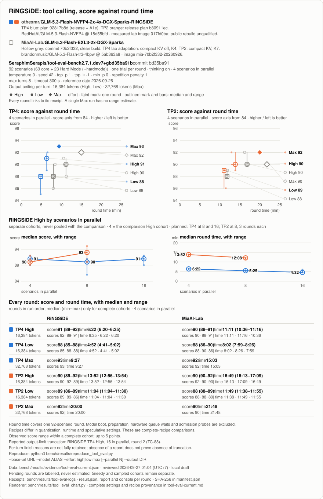
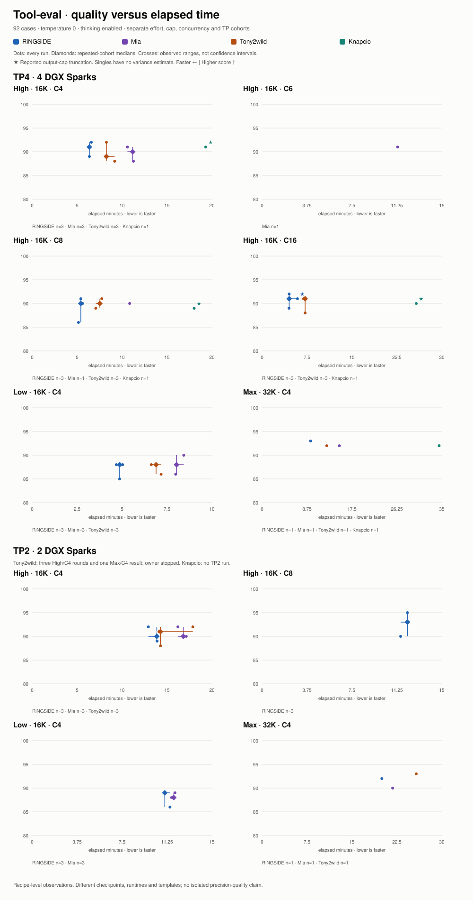
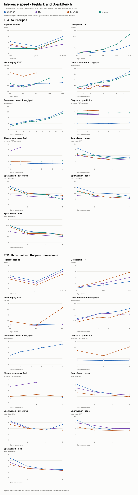

LOCAL REVIEW · NOT PUBLISHED
GLM-5.3 Flash recipe comparison
Four recipes, separate TP4 and TP2 panels. No new benchmark runs. Missing measurements are not zeros.
1. Our measured RiNGSiDE baseline
The original chart generator from yesterday renders these same RiNGSiDE TP4 and TP2 receipts, including every round, medians and ranges. Blue is TP4; orange is TP2. Nothing here is a new run.
| Ours | High · C4 | Low · C4 | Max · C4 |
|---|---|---|---|
| TP4 | 91/100 · 6.4 min · n=3 | 88/100 · 4.9 min · n=3 | 93/100 · 9.4 min · single |
| TP2 | 90/100 · 13.9 min · n=3 | 89/100 · 11.1 min · n=3 | 92/100 · 20.0 min · single |

Open original chart full size · Original 37-round evidence · Original tool chart generator

2. Four-recipe tool-eval comparison
Our rounds are shown alongside every available Mia, Tony2wild and Knapcio TP4/TP2 round. The table keeps comparable C4 cohorts visible; separate C8/C16 cohorts remain in the chart and CSV.
Every completed temperature-zero 92-case round is shown. Medians and observed ranges appear only for repeated cohorts. Singletons do not estimate variability. Time excludes boot, queue and preparation. Reported truncations remain visible; their absence does not prove no cap exhaustion.

Open comparison chart full size · All 60 rounds (CSV) · Separate historical appendix · Dark history version


Scores, elapsed time and per-round receipts
| Recipe | TP | Effort | C | Run | Score | Seconds | Truncation | Source |
|---|---|---|---|---|---|---|---|---|
| RiNGSiDE | 4 | high | 4 | 1 | 92 | 395.000 | none reported | receipt |
| RiNGSiDE | 4 | high | 4 | 2 | 89 | 382.000 | none reported | receipt |
| RiNGSiDE | 4 | high | 4 | 3 | 91 | 380.000 | none reported | receipt |
| RiNGSiDE | 4 | low | 4 | 1 | 85 | 292.000 | none reported | receipt |
| RiNGSiDE | 4 | low | 4 | 2 | 88 | 281.000 | none reported | receipt |
| RiNGSiDE | 4 | low | 4 | 3 | 88 | 302.000 | none reported | receipt |
| RiNGSiDE | 4 | max | 4 | 1 | 93 | 567.000 | none reported | receipt |
| RiNGSiDE | 2 | high | 4 | 1 | 90 | 832.000 | none reported | receipt |
| RiNGSiDE | 2 | high | 4 | 2 | 92 | 776.000 | none reported | receipt |
| RiNGSiDE | 2 | high | 4 | 3 | 89 | 834.000 | none reported | receipt |
| RiNGSiDE | 2 | low | 4 | 1 | 89 | 664.000 | none reported | receipt |
| RiNGSiDE | 2 | low | 4 | 2 | 89 | 664.000 | none reported | receipt |
| RiNGSiDE | 2 | low | 4 | 3 | 86 | 690.000 | none reported | receipt |
| RiNGSiDE | 2 | max | 4 | 1 | 92 | 1200.000 | none reported | receipt |
| Mia | 4 | high | 4 | 1 | 90 | 671.000 | none reported | receipt |
| Mia | 4 | high | 4 | 2 | 88 | 676.000 | none reported | receipt |
| Mia | 4 | high | 4 | 3 | 91 | 636.000 | none reported | receipt |
| Mia | 4 | low | 4 | 1 | 88 | 482.000 | none reported | receipt |
| Mia | 4 | low | 4 | 2 | 90 | 506.000 | none reported | receipt |
| Mia | 4 | low | 4 | 3 | 86 | 479.000 | none reported | receipt |
| Mia | 4 | max | 4 | 1 | 92 | 903.000 | none reported | receipt |
| Mia | 2 | high | 4 | 1 | 92 | 973.000 | none reported | receipt |
| Mia | 2 | high | 4 | 2 | 90 | 1029.000 | none reported | receipt |
| Mia | 2 | high | 4 | 3 | 90 | 1009.000 | none reported | receipt |
| Mia | 2 | low | 4 | 1 | 88 | 698.000 | none reported | receipt |
| Mia | 2 | low | 4 | 2 | 88 | 709.000 | none reported | receipt |
| Mia | 2 | low | 4 | 3 | 89 | 715.000 | none reported | receipt |
| Mia | 2 | max | 4 | 1 | 90 | 1308.000 | none reported | receipt |
| RiNGSiDE | 4 | high | 8 | 1 | 91 | 325.000 | none reported | receipt |
| RiNGSiDE | 4 | high | 8 | 2 | 90 | 337.000 | none reported | receipt |
| RiNGSiDE | 4 | high | 8 | 3 | 86 | 309.000 | none reported | receipt |
| RiNGSiDE | 4 | high | 16 | 1 | 89 | 270.000 | none reported | receipt |
| RiNGSiDE | 4 | high | 16 | 2 | 91 | 355.000 | TC-88 | receipt |
| RiNGSiDE | 4 | high | 16 | 3 | 92 | 272.000 | none reported | receipt |
| RiNGSiDE | 2 | high | 8 | 1 | 93 | 732.000 | none reported | receipt |
| RiNGSiDE | 2 | high | 8 | 2 | 90 | 694.000 | none reported | receipt |
| RiNGSiDE | 2 | high | 8 | 3 | 95 | 728.000 | none reported | receipt |
| Tony2wild | 4 | high | 4 | 1 | 89 | 491.321 | none reported | receipt |
| Tony2wild | 4 | high | 4 | 2 | 92 | 495.821 | none reported | receipt |
| Tony2wild | 4 | high | 4 | 3 | 88 | 550.685 | none reported | receipt |
| Tony2wild | 4 | max | 4 | 1 | 92 | 755.737 | none reported | receipt |
| Tony2wild | 4 | low | 4 | 1 | 86 | 430.457 | none reported | receipt |
| Tony2wild | 4 | low | 4 | 2 | 88 | 397.805 | none reported | receipt |
| Tony2wild | 4 | low | 4 | 3 | 88 | 413.721 | none reported | receipt |
| Tony2wild | 4 | high | 8 | 1 | 90 | 451.890 | none reported | receipt |
| Tony2wild | 4 | high | 16 | 1 | 91 | 435.880 | none reported | receipt |
| Tony2wild | 4 | high | 16 | 2 | 88 | 431.366 | none reported | receipt |
| Tony2wild | 4 | high | 8 | 2 | 89 | 424.583 | none reported | receipt |
| Tony2wild | 4 | high | 8 | 3 | 91 | 464.791 | none reported | receipt |
| Tony2wild | 4 | high | 16 | 3 | 91 | 415.888 | none reported | receipt |
| Tony2wild | 2 | high | 4 | 1 | 92 | 1072.601 | none reported | receipt |
| Tony2wild | 2 | high | 4 | 2 | 88 | 856.612 | none reported | receipt |
| Tony2wild | 2 | high | 4 | 3 | 91 | 846.283 | none reported | receipt |
| Tony2wild | 2 | max | 4 | 1 | 93 | 1544.251 | none reported | receipt |
| Knapcio | 4 | high | 4 | 1 | 91 | 1158.578 | {"note": "Turn 6 hit the max_tokens ceiling (16384) with 98216 characters of reasoning and no answer or tool call.", "scenario": "TC-46", "status": "partial"} | receipt |
| Knapcio | 4 | high | 8 | 1 | 89 | 1081.523 | {"note": "Turn 6 hit the max_tokens ceiling (16384) with 98219 characters of reasoning and no answer or tool call.", "scenario": "TC-46", "status": "partial"} | receipt |
| Knapcio | 4 | high | 16 | 1 | 90 | 1544.443 | {"note": "Turn 4 hit the max_tokens ceiling (16384) with 98304 characters of reasoning and no answer or tool call.", "scenario": "TC-62", "status": "partial"} | receipt |
| Knapcio | 4 | max | 4 | 1 | 92 | 2069.285 | none reported | receipt |
| Mia | 4 | high | 6 | 1 | 91 | 679.000 | none reported | receipt |
| Mia | 4 | high | 8 | 1 | 90 | 651.000 | none reported | receipt |
3. RigMark and SparkBench speed
These are complete-recipe observations, not isolated quantization or kernel comparisons. Checkpoints, versions, speculative decoding and templates differ. Knapcio uses the owner-approved switchless port; its native template ignores thinking-off, so equivalent effective thinking behavior is unproved. Knapcio has one pass; historical recipes retain their recorded sample counts.

Open comparison speed chart full size · All speed cells (CSV) · Settings and source hashes

Exact source identities used
Recipe commits and lab plan hashes are different identity types. Quality and speed windows sometimes used different recipe commits, plans or checkpoints; the rows below preserve that distinction. The tool-eval suite itself is bd35ba91b3276a6cfb04c6d7b4acfd481168bf89.
| Recipe | TP | Tool-eval source | Speed source | Checkpoint note |
|---|---|---|---|---|
| RiNGSiDE | TP4 | lab plan 92817b8d | lab plan 89dfef84 | RedHatAI 18d55bfd (quality); speed checkpoint in source receipt |
| RiNGSiDE | TP2 | lab plan b80911ec | lab plan 69ad74fc | RedHatAI 18d55bfd (quality); NVIDIA (speed) |
| Mia | TP4 | recipe 70b2f332767d303c7b13e60af1b0530adad349c2 | recipe 7cded8e2ed9d7502f32591cfeeeea4747db3d393 | brandonmusic 5ab363a8 (quality) |
| Mia | TP2 | recipe 70b2f332767d303c7b13e60af1b0530adad349c2 | recipe 7cded8e2ed9d7502f32591cfeeeea4747db3d393 | brandonmusic 5ab363a8 (quality) |
| Tony2wild | TP4 | recipe 2ac4e8dd661b12e6a1d7e69df711707abd6b9cd4 | recipe 2ac4e8dd661b12e6a1d7e69df711707abd6b9cd4 | see run receipts |
| Tony2wild | TP2 | recipe abb38bb0c4225855919d55309cd3e506d7941468 | recipe 9fea48c13b0de4a427fd443718ddd3e39863a013 | one Max/C4; owner-stopped partial campaign |
| Knapcio | TP4 | recipe dddb034717cb84c362d8a370b81723fa4ee0c4d2 | recipe dddb034717cb84c362d8a370b81723fa4ee0c4d2 | NVIDIA target; measured switchless port |
Download exact identity table (JSON). For complete per-window source, image and settings evidence, use tool-eval evidence and speed evidence. A lab plan hash is not a Git commit.
Separate sampled appendix
T1, top_p 0.95, seed 42. Single observations; excluded from the temperature-zero charts and medians.
- RiNGSiDE TP4 high C16: 90/100 in 280s — completed and clean release. Receipt
- RiNGSiDE TP4 high C4: 92/100 in 433s — completed and clean release. Receipt
- RiNGSiDE TP4 high C8: 91/100 in 357s — completed and clean release. Receipt
- RiNGSiDE TP4 low C4: 88/100 in 313s — completed and clean release. Receipt
- RiNGSiDE TP4 max C4: 91/100 in 666s — completed and clean release. Receipt
- Mia TP4 low C4: 86/100 in 513s — completed Low retained; parent cancelled/failed, other efforts incomplete. Receipt
Evidence and publication notes
- RiNGSiDE TP4: 2026-09-26-ringside-redhat-rowsplit-tp4-1; RigMark n=2, SparkBench n=2. release window of the TP4 profile, lab plan 89dfef84 (the RiNGSiDE release plan); RigMark cells are medians of 2 runs; sparkDash (a Python reproduction of MiaAI-Lab/sparkDash's decode-benchmark protocol) the median of 2 rounds in the same boot; replay matrix not run on it
- Mia TP4: 2026-09-23-mia-7cded8e-tp4-full-2; RigMark n=1, SparkBench n=1. commit 7cded8e, their default-off speed options on except KDA_BF16_LARGE_M and DRAFT_KV_COMPACT; image built by their Dockerfile with one self-test skipped; TP4 on this ring's NCCL transport
- Tony2wild TP4: 2026-09-21-tony-common-capacity-full-2; RigMark n=1, SparkBench n=1. commit 2ac4e8dd, the recipe's image at 262,144 context and 6 request slots (the lab's choice; the published launch uses 500,000 and 64), on this ring's NCCL transport (the recipe's optional all-peer RoCE route needs connectivity a ring does not have); sparkDash from a separate window of the same launch plan
- RiNGSiDE TP2: 2026-09-25-tp2-final-1; RigMark n=2, SparkBench n=1. final TP2 run, lab plan 69ad74fc (the TP2 profile's base, before the release's changes and fixes); RigMark cells are medians of 2 runs; one window, no fresh reference; sparkDash (a Python reproduction of MiaAI-Lab/sparkDash's decode-benchmark protocol) from a separate window of the same plan; replay matrix not run on it
- Mia TP2: 2026-09-23-mia-7cded8e-tp2-compact-full-1; RigMark n=1, SparkBench n=1. commit 7cded8e, their default-off speed options and compact draft pages on; image built by their Dockerfile with one self-test skipped
- Tony2wild TP2: 2026-09-23-tony-tp2-9fea48c-full-1; RigMark n=1, SparkBench n=1. commit 9fea48c with five recorded changes: this pair's direct link and addresses, a pinned drafter, the recipe's RoCE all-reduce off (it needs another image from the same author), the chat template of the author's TP4 recipe, the author's documented prefix-cache repair
- Knapcio TP4: 2026-09-27-knapcio-matched-speed-run-01; RigMark n=1, SparkBench n=1. knapcio switchless port dddb0347
Current tool-eval uses bd35ba91, 69 core + 23 Hard Mode cases, T0, seed 42, top_p 1, top_k -1, min_p 0, repetition 1, eight turns and 300-second timeout. High/Low use 16K; Max uses 32K. Temperature-one observations and earlier 69-case scores are not pooled.
Tony TP4 retains 13 greedy results and an owner-stopped parent after sampled rounds were skipped. Tony TP2 retains three High/C4 and one Max/C4 result; its parent was owner-stopped after the first Max, with ten planned rounds unrun. Both clean releases were verified. Knapcio's parent remains cancelled/failed after the owner removed the second recipe boot; completed clients and exact cleanup were independently verified.
Tool-eval RiNGSiDE uses the RedHat checkpoint at both TP sizes. The historical TP2 speed reference uses NVIDIA weights; do not treat it as the same configuration as the TP2 quality panel. Recipe configurations and date differences remain attached to each result.
Credit: SeraphimSerapis/tool-eval-bench; alexellis/rigmark; MiaAI-Lab/sparkDash; recipe authors othexmr, MiaAI-Lab, tonyd2wild and knapcio. This package is prepared for owner review only. Nothing here authorizes public publication.